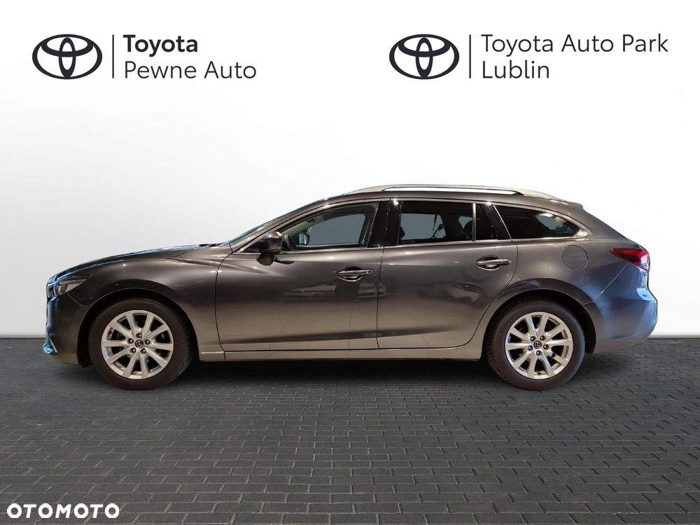
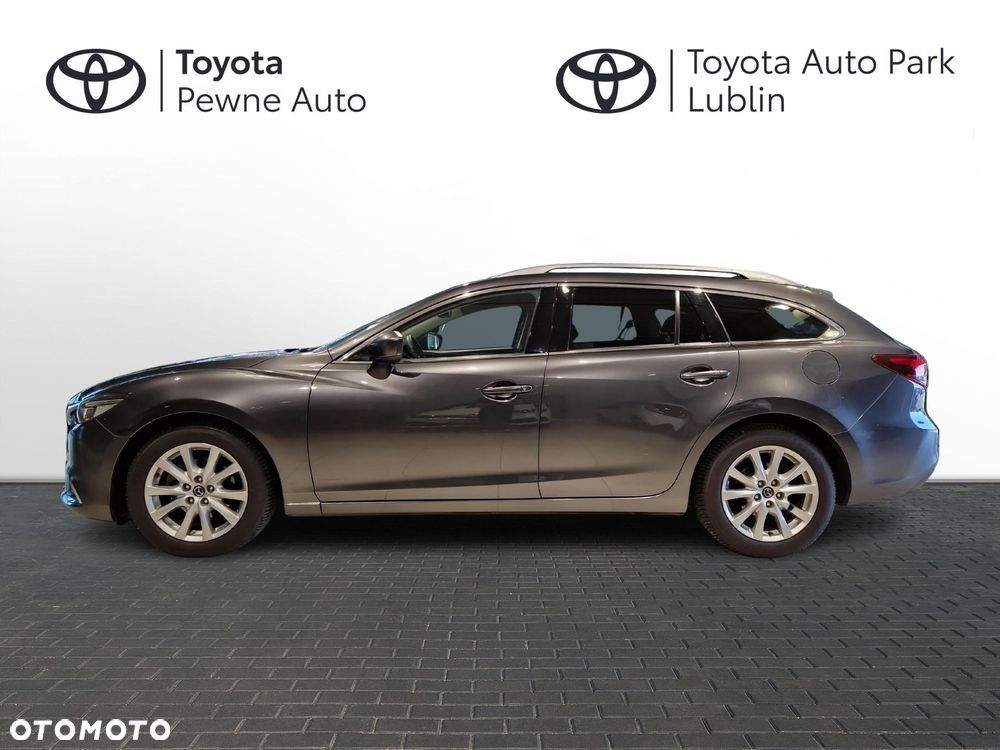
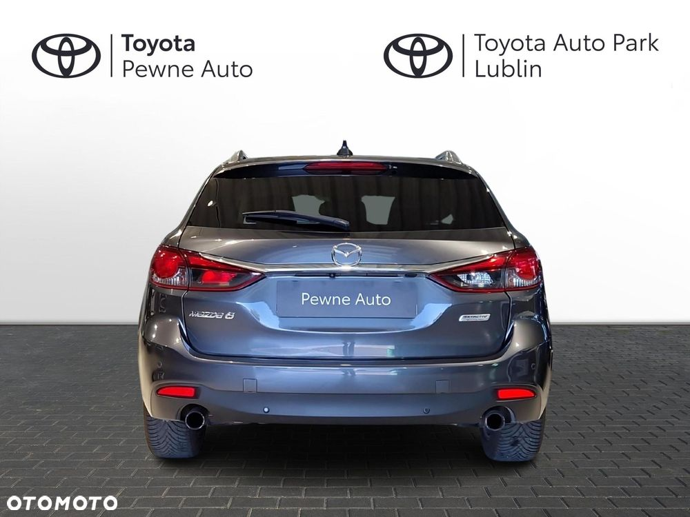
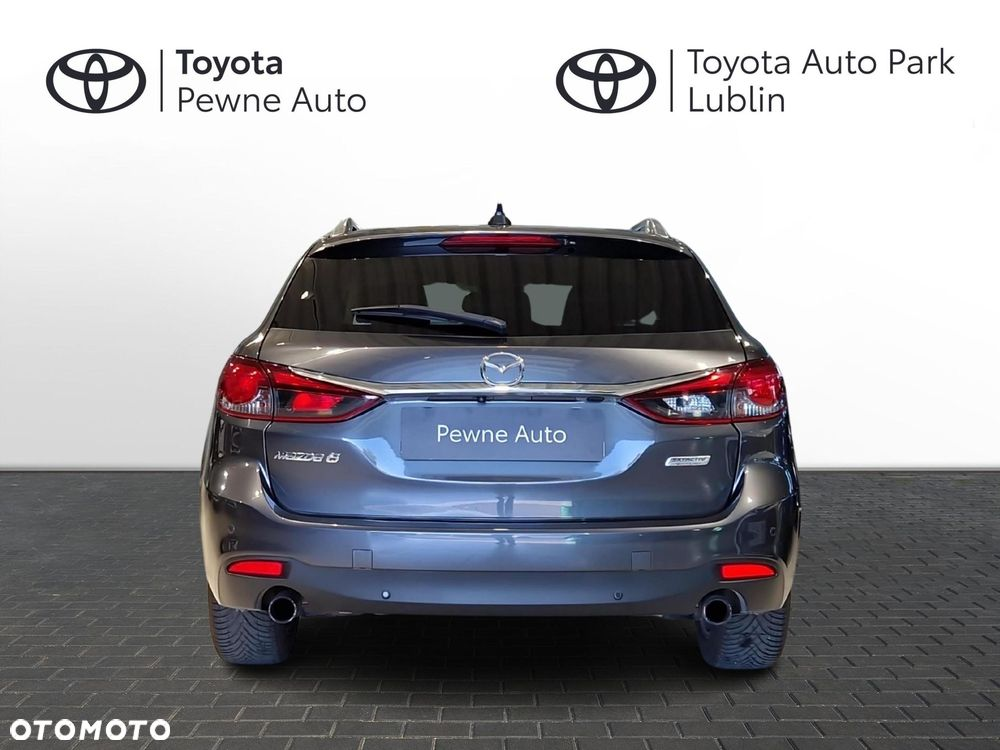
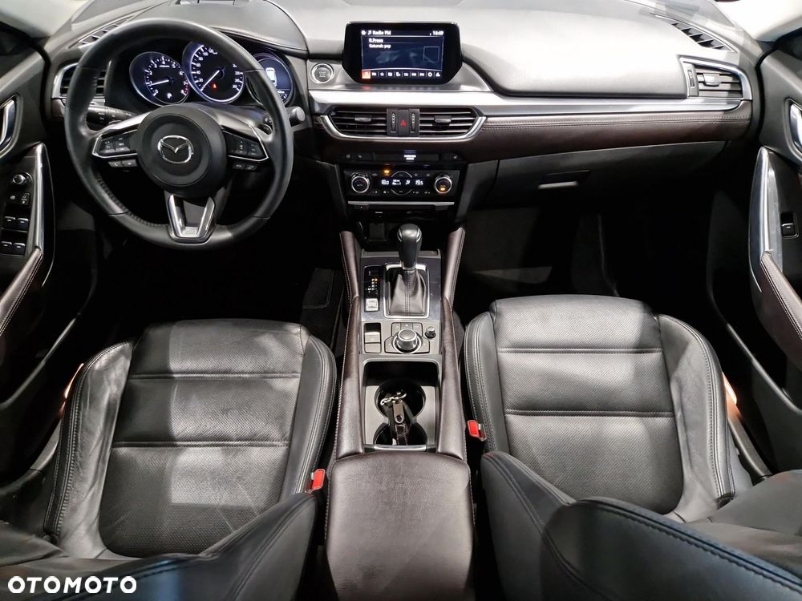
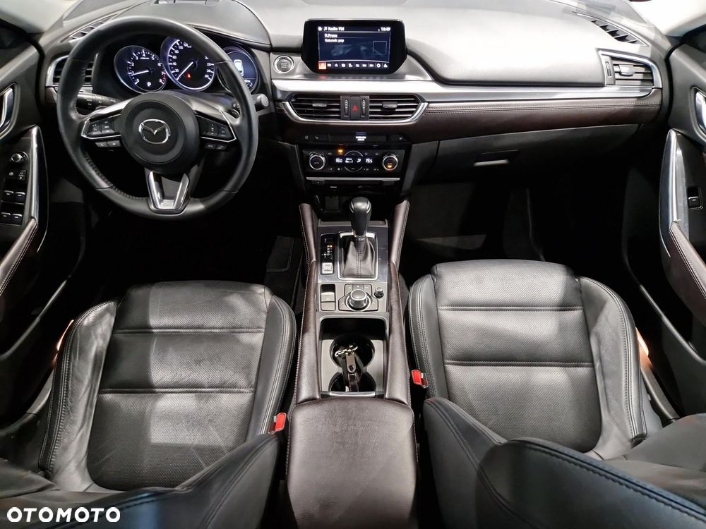

Program „Toyota Pewne Auto” to wielomarkowy program odkupu i sprzedaży samochodów używanych. Znajdziesz tutaj najlepsze oferty samochodów używanych od dilerów Toyoty. Gwarancja Każdy samochód z programu Toyota Pewne Auto objęty jest co najmniej roczną gwarancją, podczas której podlega okresowym przeglądom technicznym Sprawdzony stan techniczny Każdy pojazd przechodzi wielopunktowe i szczegółowe badanie, które wykonują wykwalifikowani mechanicy przy użyciu ścieżki diagnostycznej z użyciem specjalistycznych narzędzi. Udokumentowana historia i przebieg W programie Toyota Pewne Auto zyskujesz pewność, że kupujesz samochód używany z pewną historią i przebiegiem, wszystko potwierdzone Certyfikatem Kontroli Jakości, który jest jednocześnie świadectwem przeprowadzenia wielopunktowego badania pojazdu. Finansowanie Wychodząc naprzeciw Twoim potrzebom Toyota oferuje szeroką gamę usług finansowania pojazdów oraz ubezpieczenia. Najważniejsze cechy gwarancji w programie Toyota Pewne Auto: Ochrona trwa przez okres 12 miesięcy; Sprawdzony stan techniczny; Udokumentowana historia auta oraz przebieg; Gwarancja może zostać przeniesiona na nowego właściciela pojazdu. Kontakt: Wiktor Jagiełło - Marcin Ciupek - Tomasz Grocholski - Maciej Kuśmirek - Mateusz Kośka - Ogłoszenie ma charakter informacyjny i stanowi zaproszenie do zawarcia umowy (art. 71 Kodeksu cywilnego); nie stanowi natomiast oferty handlowej w rozumieniu art. 66 § 1 Kodeksu cywilnego.
 
 



 
